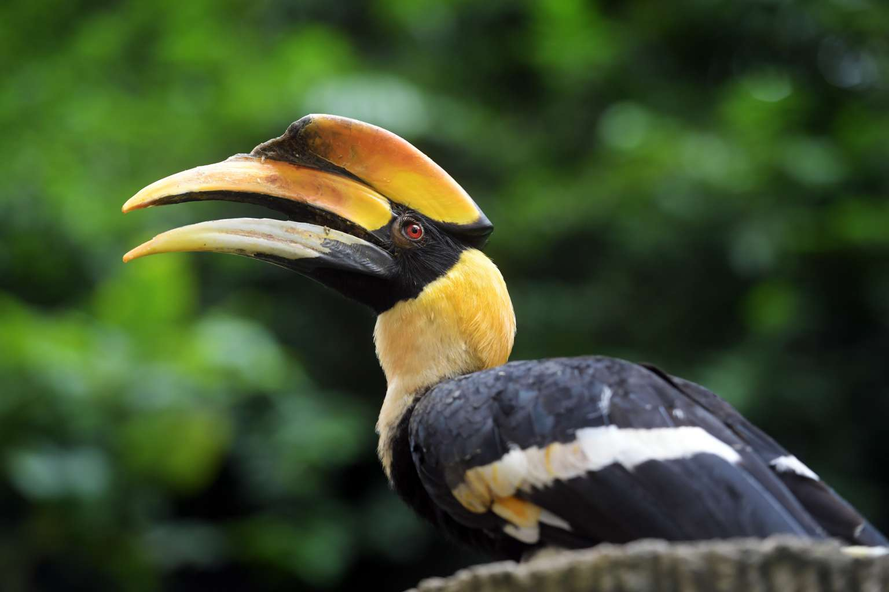
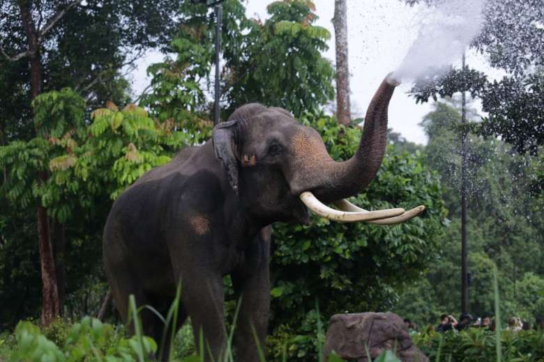
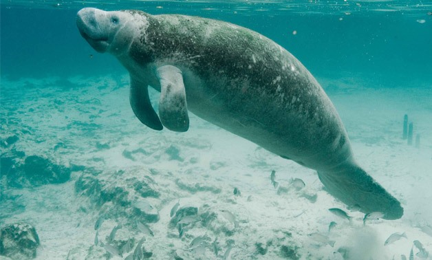

Date: 24th February 2019
Time: 7am to 11am
Venue: Singapore Zoo, River Safari, Night Safari
Originally conceived to commemorate one of Singapore's most iconic animal personalities, the late Ah Meng, the Sumatran Orangutan, the Safari Zoo Run is back for its 11th edition with our theme, "Run for Wildlife".
This year, to shake things up a little, we will have 3 different teams under which runners can register by and each team will be represented by a park icon, championing a unique conservation cause.
Our 3 park icons:
RUN FOR CLEAN AIR
Championed by #TeamSunny
Air pollution might not always be visible, but it doesn't mean it isn't there. Polluted air affects all living things, humans and wildlife are no exception to its impact. It has also resulted in climate change and a variety of health issues ranging from direct deaths to chronic respiratory conditions and diseases.
RUN FOR THE FOREST
Championed by #TeamChawang
Across the globe, forests are shrinking to make way for human development and human activities. Conversion of forests to other use have led to loss of habitat and food source affecting the survival of wildlife.
RUN FOR CLEAN WATER
Championed by #TeamCanola
Rivers, wetlands and oceans are choked with plastic waste, mostly from land rubbish. This plastic waste is harmful to wildlife and us. Many river dwelling wildlife get entangled in abandoned fishing nets, plastic bags and other plastic litter while others mistake plastic waste for food which chokes their digestive system.